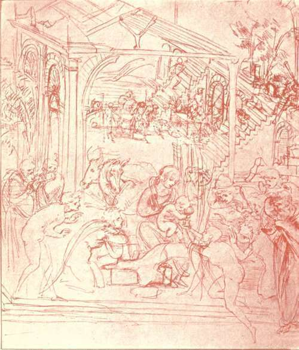
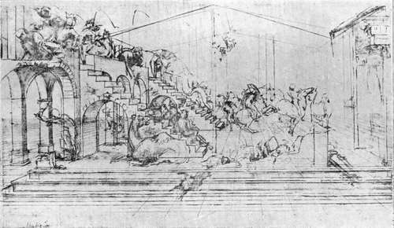

The Sculpture. Part 3
Description
This section is from the book "Leonardo Da Vinci", by Edward McCurdy. Also available from Amazon: Leonardo Da Vinci.
The Sculpture. Part 3
Presumably the knowledge of this statue, which certain of Leonardo's drawings for the Sforza statue presuppose, was acquired by him from drawings seen in Verrocchio's studio, where also studies of antique heads may have inspired several drawings at Windsor of heads full of classic suggestion which served as types for certain of the Apostles. Verrocchio, after being given the commission for the statue of Bartolommeo Colleoni by the Venetian Senate in 1479, remained for some years in Florence preparing for the work, and Leonardo, though no longer his pupil, would be acquainted with his studies for it. It was in the art of sculpture that Leonardo received most from the elder painter. The marble bust of the Lady with the Bouquet in the Bargello is almost the prototype of the Mona Lisa.
The Bartolommeo Colleoni statue at Venice, together with the Gattamelata statue by Donatello at Padua are the only examples of equestrian statuary of the Quattrocento which are of the same high lineage as was the Sforza statue; linked with antique work by study that has won something of its supreme gift of form, yet remaining strong in their own strength. Instead of pursuit of the "symmetria prisca"-that repose which only Greek art has ever uttered-they choose the moment of quivering tendon when the impulse of action is coursing like quicksilver through the veins.
Leonardo sketched the horse in every conceivable position. He studied its anatomy as scientifically as he did the anatomy of man. According to Vasari a book of such studies was destroyed at the time of the French occupation of Milan.
Measurements and drawings of a horse in the MSS. are accompanied by the notes "Messer Galeazzo's big genet"; " Messer Galeazzo's Sicilian" ; " Measurement of the Sicilian, the leg from behind, seen full in front, raised and extended."1
Galeazzo is the famous captain, Galeazzo di San Severino, in whose house Leonardo stayed in January 1491, to devise costumes for a tournament. From 1490 to 1493 was the period of his most concentrated activity upon the statue, and with it, therefore, we may specially connect this study of the proportions of one of the captain's chargers.
The studies for the statue fall into two main divisions according as they represent the horse as walking or galloping.
The former probably contain the definite conception as it appeared in the model, although the most natural interpretation of Paolo Giovio's words " cujus vehementer incitati ac anhelantis " is that they refer to the action of a galloping horse, and Paolo Giovio may have seen the statue before its destruction. But the words do not forbid the opposite interpretation. They would have very little exaggeration if any, if applied to some of the drawings in which the horse is represented walking, e.g., one at Windsor,1 where the arched neck, dilated nostrils and quivering mouth are the embodiment of vigour and impetuosity.
1 R., 716-718
Plate 8. Study For The Adoration Of The Magi
Braun photo - The Louvre
The horse is represented as walking in all except one of the drawings which illustrate the notes on the making of the mould and the process of casting.
A page of the Windsor MSS.2 in which the notes read like the record of an actual experiment, contains a small drawing of a horse in a mould represented as walking, and above is a drawing of a horse walking with rider.
A drawing in red chalk 3 represents a horse walking, the figure being inclosed in a scaffolding such as might; serve on the occasion of the conveyance of the model through the streets of Milan in 1493. At the side is the note, " all the heads of the large nails," these being presumably the bolts which fasten the frame together.
The drawings with the horse galloping have nothing to connect them with the stage of actual construction.
The indirect testimony of Leonardo's own MSS. as to the form chosen in the model is at any rate more weighty than Paolo Giovio's choice of words.
The similarity of Pollaiuolo's design with some of Leonardo's studies which have the horse galloping, points to thistypebeing Ludovic's original suggestion. Leonardo worked intermittently, dissatisfied with the result, and subsequently recommenced the horse, as he says, in 1490, and then represented it as walking, according to the opinion which he expressed in his notes at Pavia in the following year, that " the trot is of the nature of the free horse," in allowing the more unfettered interpretation of natural movement. This conception he carried up to the stage of the model exhibited in 1493. There is no record of the construction of any subsequent model, but his letters show that he still hoped to finish the statue when opportunity might arise; when neither the Duke's necessities nor as a consequence his own were so urgent, when he had earned enough by other commissions to be able again to devote himself to it. He may have returned to the earlier scheme, and prepared designs to re-awaken the Duke's zest by a fresh conception of the old motif"of the Sforza trampling on his enemies. A black chalk drawing at Windsor, with the horse galloping,1 would certainly seem to be of later date than 1493.
1 R., LXXII. 3
2 R., 711 and LXXV.
3 C. A., 216 v.
The attempt to interpret the growth of the conception from the drawings is complicated by the fact that the Sforza statue was not the only project to which they may refer.
The Codice Atlantico 2 contains a statement of the cost of construction of a monument to the Marshal Gian Giacomo Trivulzio to consist of a richly decorated tomb surmounted by a life-sized bronze equestrian statue. The slab of marble on which the statue stood was to be decorated with a frieze and eight figures, and was to rest upon eight fluted columns with bronze capitals.
Within these would lie the recumbent figure of the general. The base was to be decorated with six bas-reliefs and six harpies bearing candelabra.
This arrangement of detail is not found in its entirety in any of the drawings. The one at Windsor,3 which recalls in some degree the Colleoni statue, seems a simplification of the design and may be tentatively connected with the Trivulzio project. The recumbent figure within the columns of the open base is not mentioned in any reference to the Sforza statue. This is the only drawing which presents the appearance of a sepulchral monument which should stand within a church rather than a statue to stand in an open Piazza.
1 R., LXVIII
2 C. A., 179 v.
3 R., LXXIV,
Plate 9. Study For Background Of The "Adoration Of The Magi"
Aliuari photo - Uffizi Gallery, Florence
None of the drawings in which the horse is leaping on a fallen soldier can be connected with the Trivulzio project except by conjecture. All that we know of it is contained in the estimate of the cost of its construction, with detail so precise that had a foot soldier been part of the design the metal and necessary labour would have been specified as it is for every other part of the monument.
Three sketches of a crouching figure, designed perhaps to decorate the base, on a sheet with sketches for the Anghiari Cartoon1 have led to the suggestion that it was to arrange for the Trivulzio monument that he obtained three months' leave of absence from the Signoria in 1506. But de Chaumont was then Governor of Milan, and in a letter to the Signoria in August, he asked them to prolong Leonardo's leave because he was engaged upon a work for him which he wanted to have finished.2
Trivulzio died in 1518. He entered Milan in command of the French after defeating Ludovic at Novarain 1500. At some period between these dates Leonardo made the estimate of the cost of his monument.
As sculptor Leonardo is now nothing more than a name.
1 Windsor MSS., " Notes et Croquis sur l'Anatomie du Cheva!," 50 r.
2 Gaye, " Carteggio," vol. ii., No. XXXIII.
Vasari mentions certain "heads of women smiling," heads of children, and a small wax model of the Sforza statue. Lomazzo possessed a head in terra-cotta of the Child Christ made, he says, by Leonardo, and mentions a clay relief of a horse in the possession of Leone Aretino. Nothing is known of any of these works. Various others have been attributed to him by recent conjecture-most reasonably in the case of such as show most strongly Verrocchiesque influence. Works of this quality are the terra-cotta statuette of S. John the Baptist at South Kensington, and the relief of two naked youths bearing a shield in the Palazzo Communale at Pistoia, described as a work of Verrocchio's bottega, dated 1494.
The type in the latter, with curling locks, high cheekbone and exquisitely modelled cheek, nose aquiline and nostrils curving and slightly dilated, chin rather full and fleshy in the under part of it, and body swaying on the hips with easy swinging grace is very reminiscent of the type of youth in Leonardo's drawings.
Leonardo, perhaps, passed through Pistoia about this time on his way to Florence to consider the construction of the great hall of the Council of which Vasari speaks, and may then have supplied a design. It is somewhat improbable that no local record would have been preserved if he had had any actual share in its execution.
As no authentic work by him in sculpture exists, it is impossible for any work to be attributed to him on purely internal evidence. The comparative test is not available, and it is the essential requisite of connoisseur-ship.
Of his greatness as a sculptor we have the witness of his contemporaries. No single work of art of the Renaissance called forth such tributes of praise as did the model of the Sforza statue during its brief term of existence.
We have also his own testimony in the " Trattato." Comparing the potentialities of sculpture and painting, in giving the preference to the latter, he claims to possess the experience necessary for impartial judgment, having himself " practised the art of sculpture no less than that of painting, and doing both the one and the other in the same degree."1
1 R., 655; Ash, i. 25 r.
Continue to:
Tags
leonardo da vinci, pictures, drawings, galleries, statues, da vinci